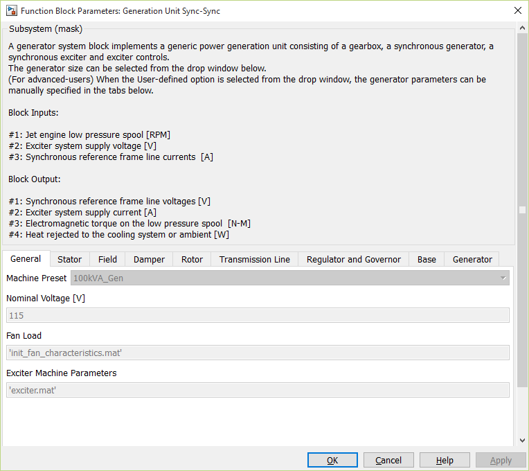

A generator system block implements a generic power generation unit consisting of a gearbox, a synchronous generator, a synchronous exciter and exciter controls. These individual systems are as described before and their mathematical models and details will not be repeated here.

The following parameters can be entered in the dialog box.
| Input | Units | Description |
|---|---|---|
Engine Speed |
RPM | Jet engine low pressure spool speed |
| Battery Voltage | Volt | Exciter system supply voltage |
iqd0 |
Ampere | Synchronous reference frame line currents |
| Output | Units | Description |
|---|---|---|
| vdq0 | Volt | Synchronous reference frame line voltages |
| Battery current |
Ampere |
Exciter system supply current |
| Engine torque | N-m | Electromagnetic torque on the low pressure spool |
PLOSS |
Watt | Heat rejected to the cooling system or ambient |